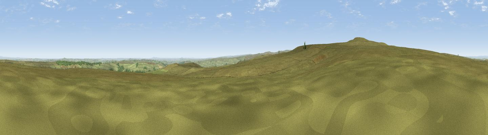
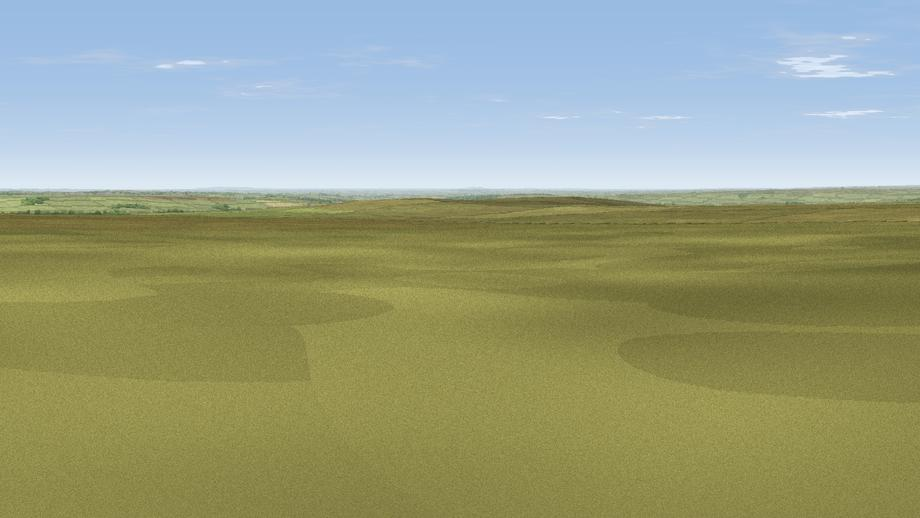

Weather Law
#14255 in England · top 32% of its area beats it · near StanhopeWhere it is
The exact computed spot (NZ 03069 41935). Green wedges show where the rendered camera views below look. Click the marker for map links.
The view, rendered

A 360° render of this exact spot computed from the terrain model, tree cover and land cover — summer colours, afternoon light, calibrated against photographs of famous viewpoints. Real trees, hedges and buildings will differ in detail.
Through the camera

Rendered views along the best direction of this panorama.
The panorama
Grey silhouette: terrain skyline in each direction (720 bearings, Earth curvature and refraction included). Dashed green: skyline with trees (+15 m) and buildings (+8 m) as obstacles. Blue strip: how far the ground is visible on each bearing.
Where the view opens
Wedge length = distance to the farthest visible ground on that bearing (vegetation-aware). Rings at 10, 25 and 50 km.
What fills the view
91% grassland · 4% woodland · 3% cropland ·
Angular shares of the visible panorama (visual magnitude), not map area. Landscape diversity 0.17 (0–1 Shannon).
Key numbers
More beautiful places nearby
The staircase of upgrades: each row has a higher view potential than everything closer. Driving times are estimates from straight-line distance, calibrated against real road routing — check an actual route before setting out.
| Place | Direction | Drive | Score |
|---|---|---|---|
| Viewpoint near Frosterley | SE · 1 km | ~4 min | 62.3 |
| Collier Law | W · 1 km | ~4 min | 71.7 |
| Pontop Pike | NE · 16 km | ~29 min | 77.8 |
| Little Dun Fell | WSW · 34 km | ~52 min | 78.4 |
| Cross Fell | WSW · 35 km | ~54 min | 78.7 |
| Viewpoint near Cumrew | WNW · 48 km | ~69 min | 78.8 |
| Barrock Fell | W · 56 km | ~78 min | 81.1 |
| Viewpoint near Thropton | N · 57 km | ~79 min | 81.8 |
54.77232, -1.95382 · source: osm peak · position refined by local search. Computed location — check access rights before visiting.